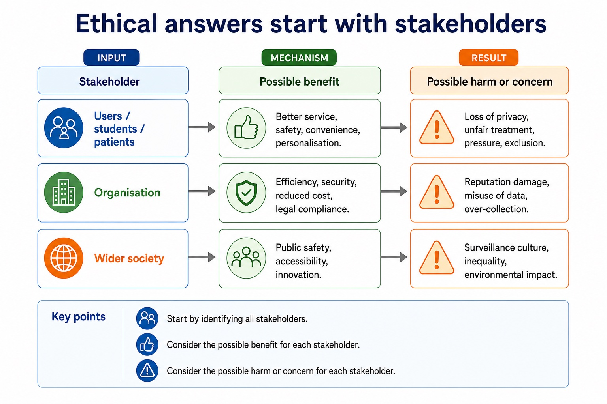

Explain the need to act ethically and the impact of acting ethically or unethically for a given situation.
Visual overview
Ethical answers start with stakeholders

Visual transcript
- Stakeholder
- Possible benefit
- Possible harm or concern
- Users / students / patients
- Better service, safety, convenience, personalisation.
- Loss of privacy, unfair treatment, pressure, exclusion.
- Organisation
- Efficiency, security, reduced cost, legal compliance.
- Reputation damage, misuse of data, over-collection.
- Wider society
- Public safety, accessibility, innovation.
- Surveillance culture, inequality, environmental impact.
Core explanation
For a given situation, decide whether an action is ethical or unethical by identifying the decision, affected stakeholders, benefits, harms, rights and responsibilities. Then explain the impact of acting ethically and the impact of acting unethically. A defensible conclusion applies evidence, proportionality and safeguards; it is not a one-sided list or an unsupported personal opinion.
Professional ethics has a purpose: computing professionals must protect public interest, work competently and remain accountable for consequences. Joining a professional ethical body such as the British Computer Society (BCS) or the Institute of Electrical and Electronics Engineers (IEEE) provides codes of conduct, guidance, continuing professional development and a community that supports standards. In a situation, judge whether action is ethical or unethical and explain stakeholder impacts of both choices.
Joining a professional ethical body is important because membership gives a practitioner an explicit code of conduct, current professional guidance, continuing professional development and a community through which standards and misconduct can be challenged. The British Computer Society (BCS) and the Institute of Electrical and Electronics Engineers (IEEE) are the two named syllabus examples. Their codes promote public interest, competence, integrity, privacy and accountability; a code guides judgement but does not replace law.
Artificial intelligence (AI) applications include classification, recommendation, prediction and autonomous control. Every AI evaluation should identify the application or decision mechanism and trace social, economic and environmental impacts before reaching a contextual judgement with realistic mitigations.